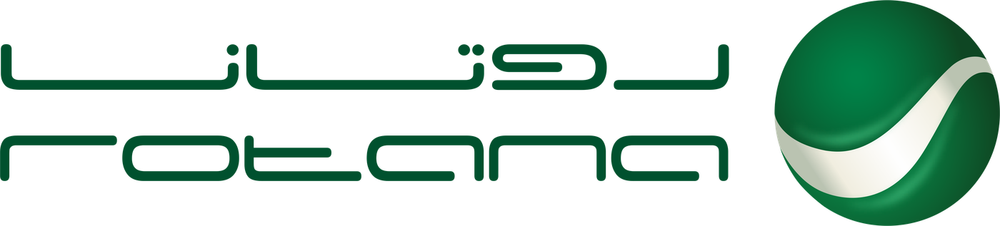
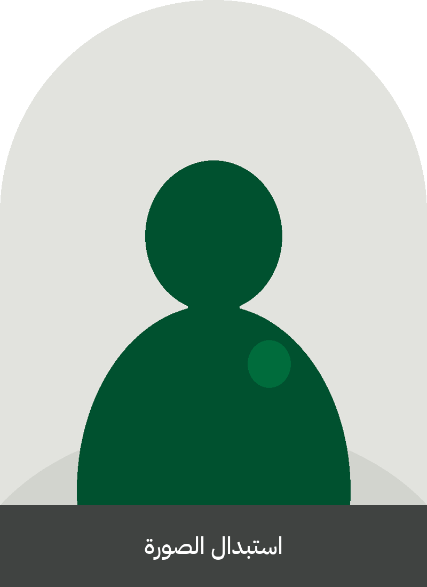
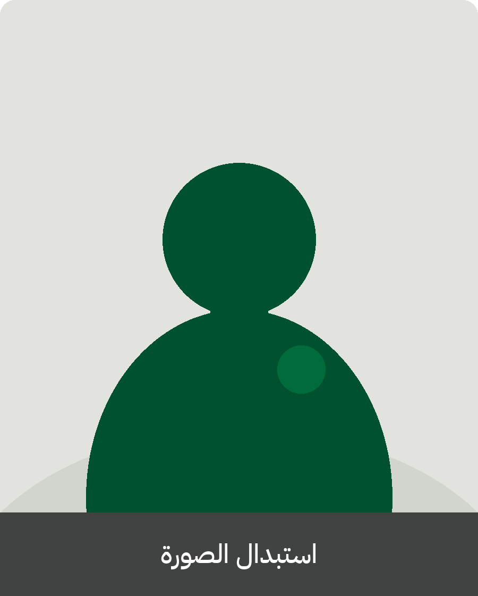
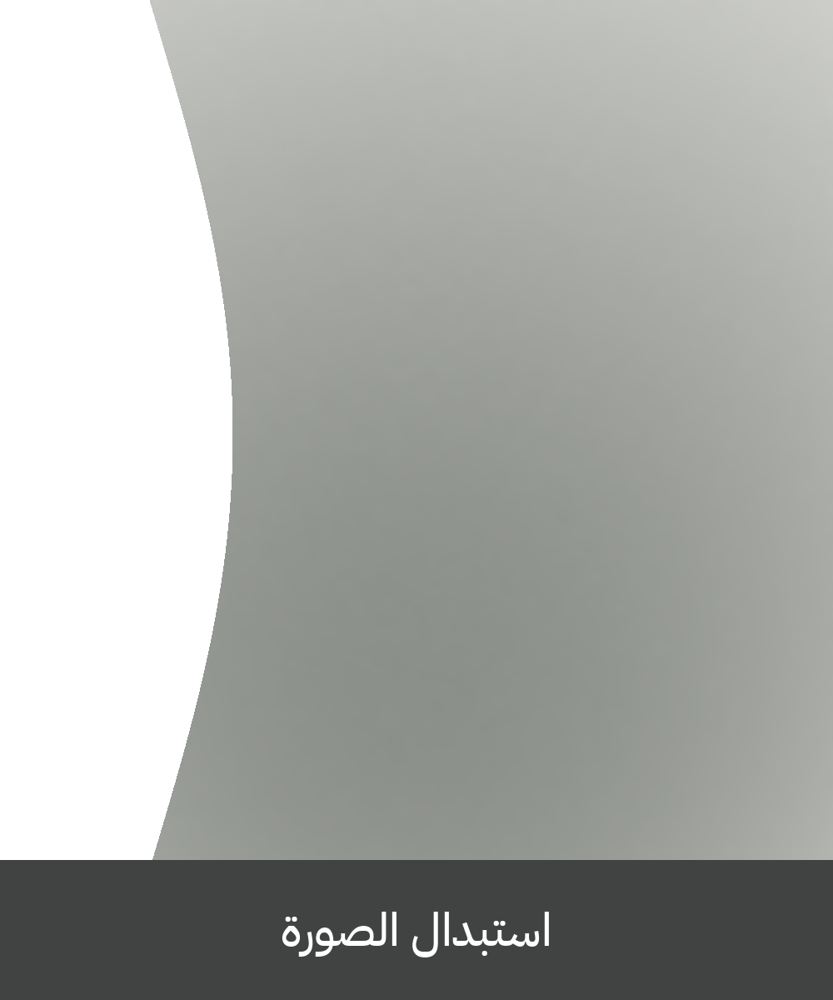
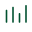
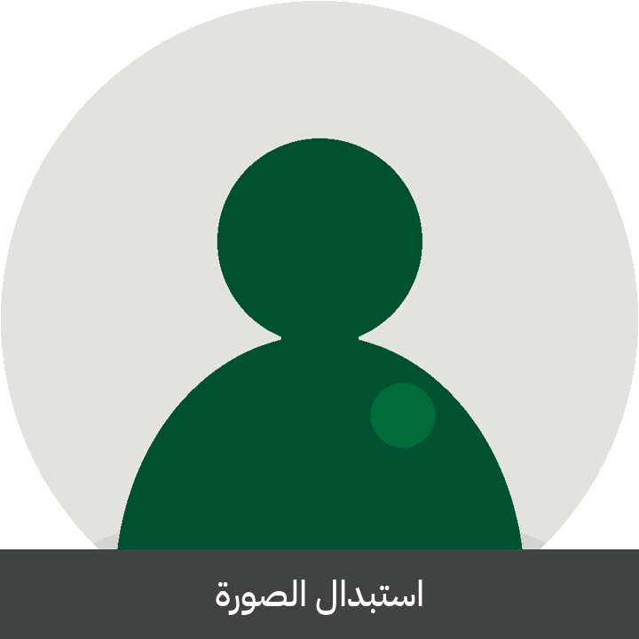

#00512F
RGB 0 · 81 · 47
الأساسي — عناوين، قواعد، سلطة

Human Resources Identity System
نظام العروض · مرجع قابل للنسخ
إدارة
الموارد البشرية
قوالب، ماسكات، أرقام، أيقونات، وإدارات —
تُنسخ كما هي وتُعدَّل كما تحتاجون.
-
١
النسخ من هذا الملف
كل شريحة تخطيط جاهز. انسخ الشريحة إلى عرضك، أو انسخ العنصر وحده (شكل، أيقونة، رقم، ماسك).
-
٢
الاستبدال لا إعادة الرسم
الصور داخل ماسكات. اضغط الصورة → Change Picture. الأيقونات ملفات مستقلة. الألوان لها أكواد ثابتة.
-
٣
لا تختَرع لونًا جديدًا
الأخضر من الشعار، والرمادي الفاتح هو الورق. الفخامة هنا في الفراغ والخط، لا في الزخرفة.
الشريحة رقم ٠١ و٢٤ للغلاف فقط. الباقي مادة عمل يومي.
#006C3C
RGB 0 · 108 · 60
وسط الكرة — رسوم بيانية
#2BA86C
RGB 43 · 168 · 108
لمسة فقط — لا تملأ به الشريحة
#E8E8E4
RGB 232 · 232 · 228
الرمادي الفاتح — حقول، ماسكات
#0C100E
RGB 12 · 16 · 14
أغلفة وأقسام
#C5C7C2
RGB 197 · 199 · 194
خطوط رفيعة، حالة خاملة
- لا تضع تدرجًا على النص.
- لا تستخدم الذهبي أو النيون — ليسا من الشعار.
- Leaf للبيانات الموجبة فقط، بمساحة صغيرة.
- الحدود Stone بسمك ١px، لا ظلال تحت البطاقات.
Display — Amiri
المواهب تُدار كما تُدار العلامة.
UI — IBM Plex Sans Arabic
الاستقطاب، التهيئة، الأداء، المزايا، الثقافة.
الجسم ١٨–٢٠. الشروحات ١٥. التسميات ١٢. لا تضغط السطر.
Latin — IBM Plex Sans
Rotana HR · Headcount · eNPS
Codes — IBM Plex Mono
#00512F · RGB 0 81 47
مساحة الأمان حول الشعار = ارتفاع حرف r الإنجليزي. لا تُسقط ظلًا ولا تلوّن الوردمارك.




في PowerPoint: تحديد الصورة → Picture Format → Change Picture. الماسك يبقى.
١٬٢٤٠
إجمالي القوة
Headcount · Q2
٨٧%
نسبة التهيئة
Onboarding complete
٢٤
يومًا للتوظيف
Time to hire
+٦٫٢
eNPS
مقابل الربع السابق
٦٢٪
تشغيل
- تشغيل · ٦٢٪
- دعم · ٢٣٪
- قيادة · ١٥٪
- روتانا موسيقى
- روتانا خليجية
- روتانا سينما
- روتانا دراما
- روتانا كوميدي
- روتانا زمان
- روتانا كلاسيك
- روتانا كيدز
- المنصات الرقمية
- التسويق والعلامات
- المبيعات والشراكات
- الإنتاج
- التوزيع والحقوق
- المالية
- الشؤون القانونية
- تقنية المعلومات
- الاتصال المؤسسي
- الموارد البشرية
الاستقطاب
Talent Acquisition
التهيئة
Onboarding
التدريب والتطوير
L&D

إدارة الأداء
Performance
التعويضات والمزايا
C&B
علاقات الموظفين
ER
الثقافة والرفاه
Culture
تخطيط القوة
Workforce
السياسات والالتزام
Compliance
الرواتب
Payroll
المواهب والخلافة
Talent
الصحة المهنية
Wellbeing
٠١
الاستقطاب
والاختيار
Talent Acquisition
- ٠١نبض القوة العاملة١٢ د
- ٠٢الشواغر الحرجة والمواهب١٨ د
- ٠٣مسار التهيئة للربع١٠ د
- ٠٤الثقافة ومؤشر eNPS١٢ د
- ٠٥قرارات ومالكو المتابعة٨ د
نُوظّف للعلامة قبل أن نُوظّف للوظيفة. المرشح الذي لا يستطيع تمثيل روتانا في غرفة لاحقة، لا يُعوَّض بسرعة إجراءات التوظيف. هذا التخطيط لنص سياسات، أو لمقدمة عرض، أو لقرار يُقرأ بصوت عالٍ.
انسخ النص. غيّر الجملة. أبقِ الحجم والهامش.
نُبقي
- مقابلة الكفاءة الثقافية مع كل عرض.
- مسار تهيئة ٣٠–٦٠–٩٠ يومًا.
- مالك واحد لكل شاغر حرج.
نُغيّر
- زمن الاعتماد الداخلي فوق خمس طبقات.
- الوصف الوظيفي كمستند جامد.
- قياس التدريب بالحضور لا بالأثر.
ناس
استقطاب يطابق صوت روتانا، وتهيئة لا تترك أحدًا في الأسبوع الأول وحيدًا.
أداء
أهداف واضحة، مراجعة نصف سنوية، وخلافة للمقاعد التي لا تحتمل فراغًا.
ثقافة
مكان يُنتج فيه العمل الإبداعي دون فوضى إجراءات، وبلا تساهل في الاحترام.
- ١
تعريف
الوصف، النطاق، ومالك القرار.
- ٢
اختيار
غربلة، مقابلة، ومحاكاة عمل.
- ٣
عرض
حزمة، تاريخ، وتوقيع واحد.
- ٤
اندماج
٣٠–٦٠–٩٠ بقياس لا بانطباع.
- Q1إطلاق الأهداف وتهيئة الدفعة الشتوية
- Q2مراجعة منتصف العام ومسار الخلافة
- Q3مسح eNPS وبرامج القادة
- Q4معايرة الأداء وتخطيط القوة للعام التالي



«
العلامة تُسمَع في الأغنية، وتُرى فيمن يفتح الباب في اليوم الأول.
روتانا · الموارد البشرية
| سابقًا | الآن | |
|---|---|---|
| أول يوم | أوراق وتوقيع | لقاء فريق + مشغّل العمل |
| الأسبوع ١ | بريد تعريفي | شريك تهيئة مسمّى |
| اليوم ٣٠ | لا قياس | مراجعة ٣٠ يومًا |
| اليوم ٩٠ | انطباع المدير | ثلاثة مؤشرات أثر |
تخطيط صورة + نص
المكان يسبق الشريحة.
هذا الماسك للموجة. ضع صورة استوديو، أو بروفة، أو فريق على الأرض. النص يبقى على الورق، والصورة تأخذ القرار البصري.
شكرًا
إدارة الموارد البشرية
انسخ · استبدل · لا تُعدّل الأصل